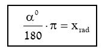
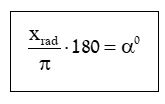
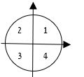

הטריגונומטריה נחקרה עוד בימי היוונים הקדמונים לשם הבנת הקשרים בין צלעות לזוויות במשולשים שונים; תחילה במשולשים ישרי זווית ואחר כך גם במשולשים כלליים. עם הזמן הורחבה הטריגונומטריה גם לשטחים נוספים. ככל שהתפתח המדע בעידן המודרני, כך הורגש הצורך למצוא פונקציה מחזורית שתיתן תשובה הולמת לחקר התופעות שאנו מוצאים ביקום. היקום שלנו מחזורי מאוד; החל מתנועות האלקטרונים עבוֹר בגלים ועד תנועות הכוכבים. המחזוריות שולטת בקצב הלב כמו בתנועת גלגלים וטורבינות. אם נתבונן קצת סביבנו, נבחין כי אין כמעט מערכת שאיננה מחזורית או תלויה במחזוריות. לכן כיום משתמשים בפונקציות טריגונומטרית לתיאור פונקציות מחזוריות ללא כל תלות בזוויות ובגיאומטריה.
בספר זה לא נלמד על פי התפתחות הטריגונומטריה, אלא דווקא נתחיל בהבנת הפונקציה הטריגונומטרית וכמקרה פרטי שלה נתמודד עם בעיות גיאומטריות.
הצורה המושלמת המוכרת לנו לתיאור מחזוריות, היא המעגל. כולנו חשים שהמעגל סובב וחוזר לנקודת ההתחלה. בהביטנו על השעון, אנו רואים כיצד בכל 12 שעות המחוגים חוזרים בדיוק למצבם הקודם. לו היה מחוג השעות שובת, היינו מתקשים לדעת את השעה, על אף שהיינו יודעים את הדקות. לכן נבחרה צורה זו לתאר פונקציות מחזוריות.
מעבר לכך: אם נְדַמֶּה לעצמנו משטח המסתובב סביב ציר מרכזי על שולחן (כדוגמת התקליטים של העבר) ונעמיד עליו נר, נוכל לראות את מסלול הנר. אולם אם נקפיד לשמור את גובה העיניים בדיוק בגובה השולחן, לא נראה את מסלול הנר האמיתי, אלא נראה כאילו הוא נע על קו ישר בתנועה מחזורית ימינה ושמאלה. את פונקציית התנועה שלו אנו מחפשים. ברור לנו שכל נקודה בתנועה הנראית, תלויה בזווית שבה המשטח מסתובב.
רקע הסטורי
עד היום למדתם שגודל של זווית הוא מספר המעלות שעוברת הקשת המתאימה לזווית. ומעלה מוגדרת כ - 1⁄360 מאורך קשת המעגל.
מניסיוני, תלמידים מקבלים דברים כמות שהם (כי המורה אמרה..) לא שמעתי אף לא פעם אחת את השאלה: מדוע החלוקה המוזרה הזו ל- 360? מדוע לא חולק המעגל ל- 100 או אולי ל- 1000? הרי לוּ הייתה המעלה מחולקת לגודל עשרוני, היה קל יותר לבטא חלקי זוויות, ולא היינו זקוקים להגדרות כמו דקה (שהיא 1⁄60 של מעלה) או שנייה (שהיא 1⁄60 של דקה).
ובכן כדי לענות על שאלה מציקה זו עלינו לחזור לימים בהם נחקרו גרמי השמים והותוו מעגלים. ימים אלה ירחיקו אותנו עד לתקופה הבבלית. הבבלים היו הראשונים שיצרו את התיארוך על פי תנועת הארץ אל מול קבוצות הכוכבים שאנו מכירים אותן כמזלות. הם שמו לב למחזוריות ולתנועה המעגלית ובנו את המעגל על פי תפיסתם. מכיוון שהמספר 6 וכפולותיו היה מספר בעל משמעות מיסטית עבורם, חילקו את המעגל ל – 360, ועל פי מספר זה קבעו את גודל המעלה.
ראוי לציין שהמספר 60 מתחלק בהרבה מאוד מספרים טבעיים ללא שארית:
(1, 2 ,3, 4, 5, 6, 10, 12, 15, 20, 30, 60).
הסבר זה בא כדי להציג שהמעלה היא גודל שרירותי שאין מאחוריו כל כוונה מתמטית. כאשר התפתחה השיטה העשרונית (מאות שנים אחר כך), כבר היו ענף הגיאומטריה וחקר המעגלים מפותחים מאוד יחסית, ולא היה הגיוני לשנות את גודל המעלה לשיטה עשרונית. כך מלווה אותנו המעלה עד היום. כך אנו מוצאים את קווי האורך וקווי הרוחב של הגלובוס מחושבים עדיין לפי שיטה זו, וכן את תזוזות מחוגי השעון על פי חלוקה ל- 24 שעות ול- 60 דקות ול- 60 שניות. כאשר התפתחו המדע והמתמטיקה, היה צורך לבטא את הזווית כמספר טהור ולא כמספר עם מֵמד. חקירת פונקציה באופן מתמטי אינה סובלת מְמדים אלא מספרים טהורים בלבד.
לשם כך הוגדרה זווית באופן שונה.
מהגאומטריה למדנו שאורך קשת מעגל היא פרופורציונלית לאורך הרדיוס, כפי שאנו רואים בשִׂרטוט:
מכאן הדרך קצרה להגדרת זווית על פי יחס האורכים. כפי שאנו יודעים, יחס הוא תמיד מספר טהור. במקרה שלנו:
אורך
אורך
= מספר חסר ממדים. כך הגדרנו זווית ללא מְמדים.
כך אנו מגדירים את הזווית:
אורך קשת
רדיוס
= α
בפועל:
α=1 כאשר אורך הקשת שווה בדיוק לאורך הרדיוס.
α=2 כאשר אורך הקשת כפול מאורך הרדיוס.
α=π כאשר אורך הקשת הוא בדיוק חצי מעגל.
נקודה נוספת חשובה היא שאנו תמיד מתחילים למדוד את הזווית מהכיוון החיובי של ציר ה- x , בתנועה נגד כיוון השעון. כמו שרואים את כיוון הזוויות בציור.
זוויות שליליות נמדדות מהכיוון החיובי של ציר ה-x כאשר החץ הוא בכיוון ההפוך, כלומר עם כיוון השעון.
כדי להבין אם אנו מציגים זווית במעלות או במספר טהור, נהוג לסמן את שיטת המדידה. שיטת המדידה לפי יחס האורכים נקראת רדיאן, או בסימולה הבינלאומי rad. אולם אסור לנו לטעות! אין הרדיאן מבטא מֵמד. להפך - הוא מבטא מספר טהור.
כך נוכל להפריד בין α=2° המצביעה על זווית חדה בעלת מֵמד של מעלות, לבין α=2rad המבטאת זווית קהה.
כבר גילינו שהמעבר ממעלות לרדיאנים וההפך הוא על פי הפקטור: 180°=prad (כאשר אורך הקשת הוא בדיוק חצי מעגל α=180°).
לכן אם רוצים לעבור מגודל זווית במעלות לגודלה ברדיאנים, משתמשים בנוסחה:
כך אנו מוצאים ש:
וכן הלאה. כמובן:
ולהֶפֶך אם רוצים לעבור מרדיאנים למעלות:
כך מוצאים ש:
במקרים רבים אנו משתמשים בכפולות של π כדי לציין זווית ברדיאנים. מאחר ש- π איננו מספר רציונלי, מדויק יותר לתאר את הזווית בדרך זו מאשר באופן עשרוני. אולם הדבר אינו הכרחי, באותו אופן ניתן לתאר את הקשר: 90° = 1.57rad
כדי לחוש את גודל הזוויות ברדיאנים השלימו את הטבלה שלפניכם:
| הזווית במעלות | הזווית ברדיאן ככפולה של p | הזווית ברדיאן בכתיבה עשרונית | המיקום לפי רביעים  | |
| 1. | 90 | 1⁄2 | 1.57 | על הציר האנכי |
| 2. | 45- | 1⁄4 | 0.785- | רביעי |
| 3. | 120 | 2⁄3 | 2.09 | שני |
| 4. | 150 | 5⁄6 | 2.62 | שני |
| 5. | 225- | 1.25- | 3.93- | שני |
| 6. | 135 | 3⁄4 | 2.36 | שני |
| 7. | 270 | 3⁄2 | 4.71 | ציר אנכי |
| 8. | 396 | 11⁄5 | 6.91 | ראשון |
| 9. | 210- | 7⁄6- | 3.67- | שני |
| 10. | 57.29 | 0.32 | 1 | ראשון |
| 11. | 128.91 | 0.72 | 2.25 | שני |
| 12. | 246.37- | 1.37- | 4.3- | שני |
| 13. | 458.37 | 2.55 | 8 | שני |
| 14. | 30.37- | 0.17- | 0.53- | רביעי |